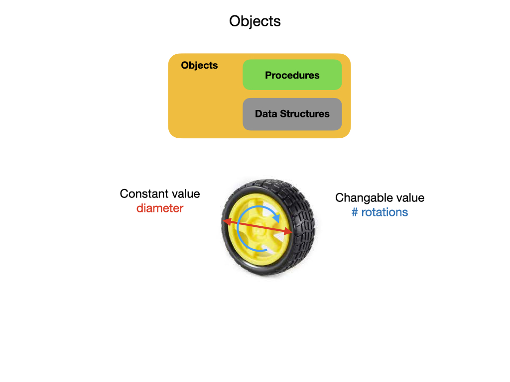

Objects
Objects are programming constructs that are used to represent physical objects and ideas in the real world. They are made up of Data Structures and Procedures that define the object’s attributes and the tasks that it can perform. Attributes are pieces of data that describe an object’s physical appearance and maintain its current state. An example might be the diameter of a wheel and its number of rotations. The first is and example of a Constant data type since the diameter of a wheel does not change. The latter is a variable, or mutable, data type since the number of times that a wheel has rotated may change thoughout the execution of the program. In Object Oriented Programming(OPP) Procedures are referred to as Methods or Functions.
All Objects are derived from Classes that provide a common template for their creation. There are three major components of a Java class.
- Constructor
A constructor is a special method that is used to create and initialize an object of a Java class. Every Java class must have a constructor, and if we don’t declare one the compiler creates a default constructor for us. A constructor must have the same name as the Java class.
- Attributes
These are the data structures that describe the object’s physical appearance and maintain its current state. All attributes must be initialize when an object is constructed, otherwise the object would be in an inconsistent state.
- Methods
A method is a block of code which only runs when it’s called. You can pass data, known as parameters, into a method. Methods are used to perform certain actions, and they are also known as functions.
The W3 Schools Java Tutorial has an introduction to Object Oriented Programming (OOP). The tutorial also explains Attributes and Methods.
The Four Pillars of OOP
The following are known as the four main pillars of Object-Oriented Programming.
Abstraction means to only show the necessary details about the object to the user. So when we ask our robot to drive forward we don’t care how it does it we just want it to perform the action.
Inheritance is useful for code reusability. Say you have an existing class and you want to build a new class that has the same features but with some additional functionality added to it. The inherited class is called the child class and the class that it’s inherited from is called the parent class or superclass.
Encapsulation is built on the idea of data hiding. What we do here is restrict access to internal data or methods of the object. That means that you cannot invoke these methods directly even if you have created the object. These restricted methods are used by other invokable methods to carry out some operation. It normally wouldn’t make sense to call these methods directly.
Polymorphism is a more advanced concept. It allows us to perform a single action in different ways. In other words, polymorphism allows you to define one interface and have multiple implementations for it. For example, a DC motor may have a method called setPower. Depending on the type of motor there may be different implementations on how that power is applied to rotate the motor.
The word “poly” means many and “morphs” means forms. So it means many forms.
References
W3Schools - Java Classes and Objects
Wikipedia - Object Oriented Programming(OPP)